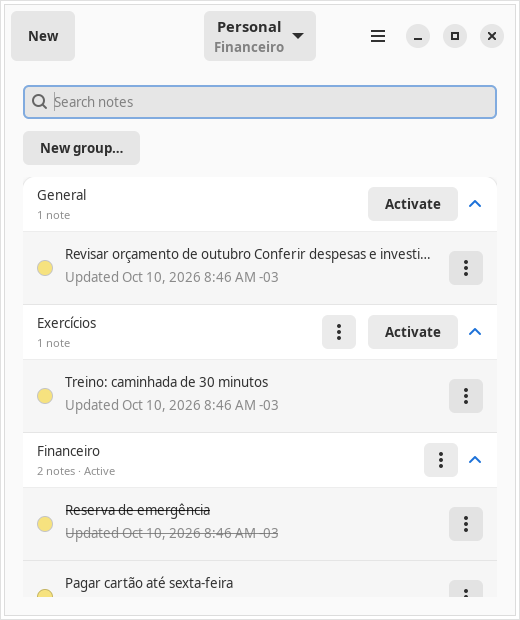
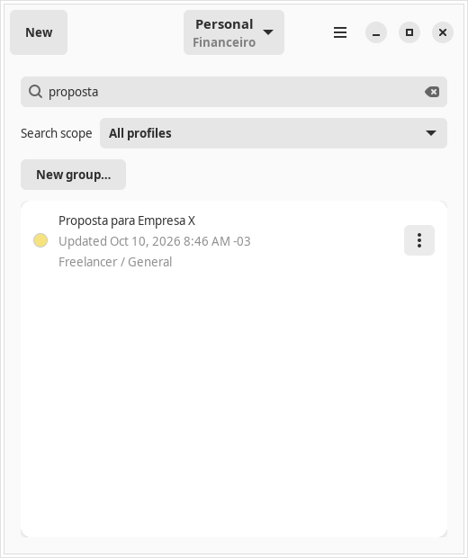
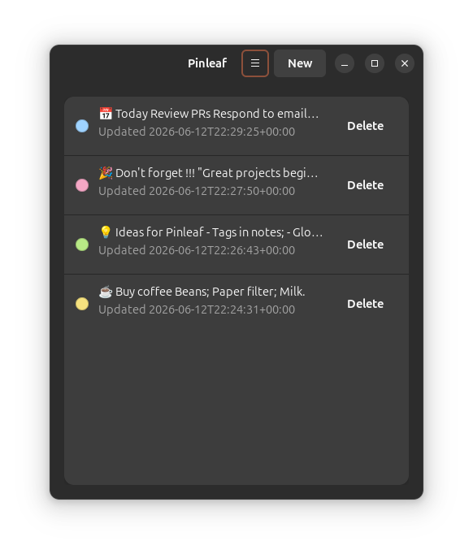
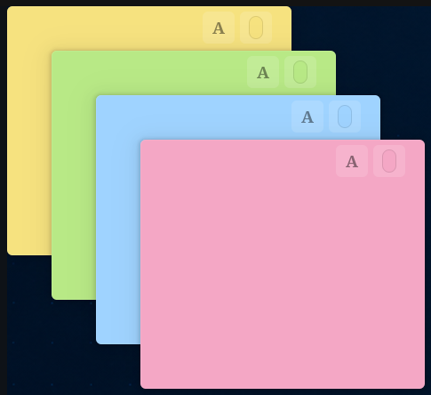
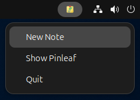
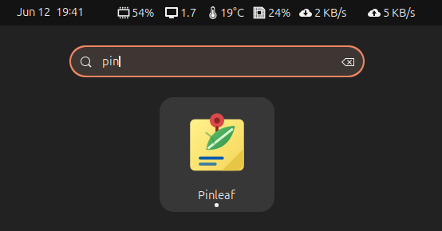

Supported platform
- Primary target: Ubuntu 24.04 LTS with GNOME or GNOME-style desktop sessions.
- Supported install path: Launchpad PPA with apt.
- Runtime stack: Python 3, GTK 4, libadwaita, PyGObject and Ayatana AppIndicator.
- Best-effort: other Debian/Ubuntu-compatible systems with the same dependencies.
- Not validated: Fedora, Arch, openSUSE, KDE, Xfce, LXQt, Flatpak, Snap, AppImage, macOS or Windows.
Available in 0.8.0
- Independent post-it-style note windows.
- Autosave and local SQLite persistence.
- Four note colors with curated bundled and system font choices.
- Default text settings for new notes, plus per-note text appearance controls.
- Main panel with previews, local-time timestamps and struck-through hidden notes.
- Focused note action dialog from Escape for hiding or deleting notes.
- AppIndicator menu for quick create, show and quit actions.
- Ubuntu PPA and local Debian package installation with apt.
New in 0.8.0
Organize your desktop in 0.8.0
Profiles, groups and text search keep the notes for each project together. Get 0.8.0 from GitHub Releases or install it from the Ubuntu PPA. You can also run from source.
- Separate work, freelance and personal notes with profiles chosen in the panel header.
- Expand groups to browse notes. Activate one group to show its open notes on the desktop.
- Keep hidden notes hidden when switching groups, and restore each profile's last active group.
- Search full note text in the active group, current profile or all profiles, ignoring case and accents.
- Move notes between groups or profiles. When deleting a group or profile, transfer its notes or delete them.
- Existing notes start in Personal / General, with a permanent General group in every profile.


Read the profiles and groups guide for activation, hidden notes, movement and deletion behavior.
Notes and desktop integration




Install
Add the Pinleaf PPA on Ubuntu 24.04 and install 0.8.0 with apt:
sudo add-apt-repository ppa:robmoraes/pinleaf
sudo apt update
sudo apt install pinleafOr download the Debian package from GitHub Releases:
sudo apt install ./pinleaf_*.debBuild a local Debian package from the repository root:
sudo apt install build-essential debhelper dpkg-dev
dpkg-buildpackage -us -uc
sudo apt install ../pinleaf_*.debRun from source with Ubuntu 24.04 system dependencies:
sudo apt install \
python3-gi \
gir1.2-gtk-4.0 \
gir1.2-adw-1 \
gir1.2-ayatanaappindicator3-0.1 \
libayatana-appindicator3-1git clone https://github.com/robmoraes/pinleaf.git
cd pinleaf
/usr/bin/python3 -m pinleafPinleaf stores notes locally under ~/.local/share/pinleaf. Package removal does not remove note data.
Development
Install the Ubuntu 24.04 system dependencies:
sudo apt install \
python3-gi \
gir1.2-gtk-4.0 \
gir1.2-adw-1 \
gir1.2-ayatanaappindicator3-0.1 \
libayatana-appindicator3-1Clone and run:
git clone https://github.com/robmoraes/pinleaf.git
cd pinleaf
/usr/bin/python3 -m pinleafInstall a user-local desktop launcher:
scripts/install-localCurrent status
The latest version on GitHub and the Ubuntu PPA is v0.8.0, with profiles, groups and scoped text search. Known limitations include best-effort window positioning and desktop-environment-specific AppIndicator behavior.
See known limitations for details.
Privacy and optional backups
Pinleaf stores notes on your computer. The upcoming backup integration adds manual local exports and optional Google Drive backup and restore; it is not included in the published 0.8.0 release. Google access is requested only when you choose to connect, and backups are sent directly to your Drive. There is no maintainer-operated notes server.